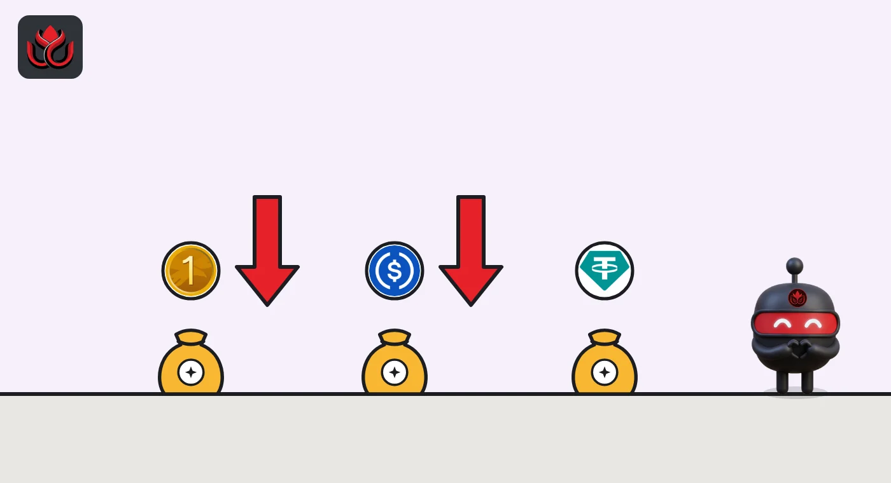

World Liberty's USD1 shrank 22% in 30 days, and USDC lost another $205 million on Monday
USD1 fell from $4.26 billion to $3.32 billion in a month, CoinGecko data shows. USDC kept leaking too, while USDT held flat for a second day.
Key points
- USD1, the dollar token of World Liberty Financial, fell from $4.26 billion to $3.32 billion in market value between October 12 and 12:44 a.m. ET on November 10, down $932 million or 21.9%, CoinGecko data shows.
- Circle's USDC lost $205 million on Monday, November 9, from $70.31 billion at midnight ET to $70.10 billion 24 hours later. It is down $2.83 billion, or 3.9%, in 30 days.
- Tether's USDT barely moved in the last day (minus $17.7 million) after losing $7.22 billion in 30 days.
A month of steady selling of USD1
A stablecoin is a token meant to stay worth $1. When holders hand tokens back to the issuer for dollars, the issuer destroys them and the supply shrinks. CoinGecko's daily data shows USD1 shrinking almost every week since mid-October: $4.26 billion on October 12, $3.95 billion on October 24, $3.87 billion on November 2, then a faster drop to $3.44 billion by November 8.
In the last 24 hours it lost another $71.6 million, the second-largest daily drop among the 20 biggest stablecoins, to $3.32 billion. World Liberty says USD1 is "redeemable 1:1 for U.S. dollars" and backed by cash, government money market funds and cash equivalents. Its page showed no live supply figure when we checked.
USD1 market value, last 30 days
US$ billion
Daily values at midnight UTC, last at 12:44 a.m. ET November 10, 2026. Source: CoinGecko API.
USDC kept leaking on Monday
USDC had the biggest dollar drop of the day. CoinGecko's hourly data shows no single large burn. The value slipped in small steps of $20 million to $60 million through the day, from $70.31 billion at midnight ET on November 9 to $70.10 billion at midnight on November 10. A brief $91 million rebound between 5 p.m. and 7 p.m. ET was gone by midnight.
Over 30 days USDC is down $2.83 billion. Circle's transparency page lists reserves as of November 5 but did not show live issuance figures when we checked.

Who else moved
USDT, the largest stablecoin, held at about $176.87 billion, almost unchanged since November 8 after a $7.22 billion fall from $184.09 billion on October 12. In the last 24 hours, CoinGecko's stablecoin list shows USDGO down $30.1 million and USDD down $23.0 million. Growth was small: OUSD up $7.1 million and Paxos' USDG up $4.7 million.
We tried to cross-check chain-by-chain supply on DefiLlama and Etherscan, but neither could be reached from our tools this run. This piece relies on CoinGecko's figures.
Why it matters
Stablecoins are the cash that traders use to buy tokens. A shrinking supply means dollars are leaving crypto, or at least leaving that token. Market value tracks supply closely because these tokens trade near $1. The data shows how much left, not who redeemed or why.
LC Insight analysis
This section is our reading of the facts above, not a statement of fact.
- We think USD1's slide is the clearest trend in the stablecoin table: a 22% drop in a month is far steeper than the 3.9% falls in USDT and USDC.
- USDC's Monday drop came in many small steps, which looks more like steady redemptions than one big holder leaving. The data cannot confirm that.
- USDT holding flat for two days breaks a monthlong slide in its market value. Two quiet days are not yet a turn.
What's next
- Whether USD1 falls below $3 billion
- Whether USDC's 30-day decline passes $3 billion
- Whether USDT starts growing again after two flat days
Disclaimer. This article is based on public information and the sources listed below as of the update time shown. It is for information only and is not investment, legal or tax advice. Figures may change as companies and authorities publish new data.
Sources
- CoinGecko, USD1 daily market chart API, 30 days (read November 10, 2026, 12:45 a.m. ET)
- CoinGecko, USDC hourly market chart API, 2 days (read November 10, 2026, 12:47 a.m. ET)
- CoinGecko, stablecoins category market data API (read November 10, 2026, 12:44 a.m. ET)
- CoinGecko, Tether (USDT) daily market chart API, 30 days (read November 10, 2026, 12:45 a.m. ET)
- World Liberty Financial, Meet USD1 (read November 10, 2026)
- Circle, Transparency and Stability (read November 10, 2026)